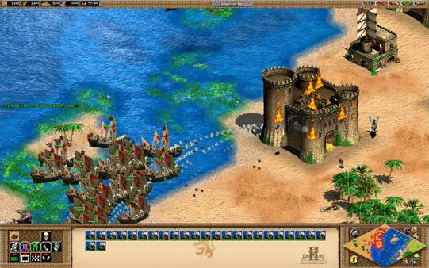
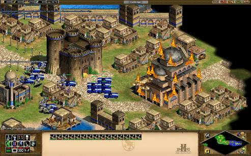
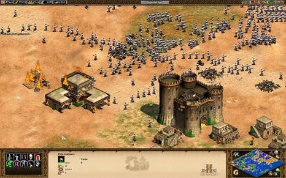

This is an impressive feat for a real-time strategy game that came out over a decade ago, especially when you consider that the official multiplayer matchmaking service was shut down years ago. A prettier version of AOEII with easier multiplayer matchmaking and mod support (via Steam's servers and Steam Workshop) is a solid idea. Unfortunately, Hidden Path's HD edition of Ensemble Studios' classic RTS suffers from a variety of bugs and missed opportunities.

Nobody expects the Spanish cannon galleon fleet!
AOEII:HD's gameplay is instantly familiar to practically anyone who has ever played a real-time strategy game focused on the big picture. This fast-paced game has you exploiting natural resources, constructing beautiful wonders and formidable castles, and advancing from the Dark Ages to the much more dignified-sounding Imperial Age. Along the way, you use the tried-and-true rock-paper-scissors formula (pointy sticks kill cavalry, villagers kill sheep, and so on) to violently evict other players from the map. There is a lot of depth to AOEII:HD, because all of the 18 playable nations have unique bonuses, units, and tech trees. For example, Frankish castles are cheap, Turks field awesome gun-powder units early on, and the Huns don't need houses to support their population. There are also randomly generated and real-world maps to play on, as well as numerous game modes, including a pacifist game type where the first player to complete a wonder wins. Because of the variety of victory conditions and diverse powers for each nation, there are a lot of ways to play, and excel, in Age of Empires II HD.
However, Hidden Path missed opportunities to improve on AOEII's gameplay. As things stand, you cannot give move-attack orders; dragging a box over a mass of units selects both villagers and troops; and it's impossible to queue up a mixture of units and research at the same building. AI pathfinding also needs some work. For instance, villagers ordered to travel to a lumber camp located in plain sight 700 yards away over open country may inexplicably decide to take a scenic route through a canyon populated by ravenous jaguars. These are examples of flaws that could have been resolved, but increasing the maximum population limit from 200 to 500 is the only noticeable change made in terms of gameplay.

At least the old cheats work.
The main difference between AOEII:HD and AOEII is the HD version's use of Steam for multiplayer matchmaking, which, given the size of Steam's user base, is significantly more convenient than programs like GameRanger. You can hop into a random game from the lobby browser and, theoretically, enjoy fantastic experiences. The game is highly enjoyable for both friendly comp stomps and player-vs.-player games. Of course, some people rage quit after accusing you of cheating simply because of your Byzantine fire ships' predilection for sinking undefended fishing fleets.
Still, a victory is a victory. A match might involve you sending a series of impressive (and foolish) Aztec human wave attacks against Viking castles and longboats defending the river crossings separating your peoples. Untold hundreds of digital Aztecs could die trying to destroy the proud Norsemen's wonder. When the stars are aligned correctly and everything works, AOEII:HD's multiplayer is exceptionally fun.
Sadly, such experiences are rare because AOEII:HD's multiplayer is currently extremely buggy. You could encounter out-of-sync errors, random crashes to desktop mere moments into the game, complete strangers entering friends-only games, and excessive lag. Another recurring problem is that, often, when someone drops, everyone else gets stuck on a vote screen, and nothing happens even if the players unanimously vote to continue the game. Furthermore, when you are using two monitors, AOEII:HD runs so poorly that even the single-player modes are practically unplayable. Hidden Path has released a few updates over the past week and fixed some of the problems. The lag in two-player games is less pronounced and some achievements work now. While it's fortunate that Hidden Path has been working on some of these problems, it is inexcusable that the game was released in this state.
While AOEII:HD's multiplayer experience is a mess, at least the nine single-player campaigns work fine. Each campaign includes at least six scenarios, and most of those take at least 30 minutes to an hour to finish, so you could easily spend dozens of hours playing the single-player campaigns. Of course, quantity isn't the same thing as quality, but some individual scenarios are so enjoyable that they stick in your memory. One example is the scenario in Attila the Hun's campaign in which you extort tribute from the Eastern Roman Empire by raiding settlements near Constantinople. You can even try to sack that heavily fortified city if you'd like.
Another memorable scenario has you leading the Vikings as they run away from Norway's many hungry wolves in search of a new life across the sea. You need to raid Scotland and conquer Greenland before traveling on to North America. Finally, you must build a proper colony in the face of constant attacks by the native Skraelings, who think they own the place. The campaigns don't make up for the woeful state of AOEII:HD's multiplayer, but they are great fun, especially if you've never played them before.
Despite the name, AOEII:HD doesn't scream "high definition." The game supports higher resolutions, but there are already several lovely graphics mods on Steam Workshop that look better than the base game. Vanilla AOEII:HD is attractive, but (original developer) Ensemble's artists deserve most of the credit. Major historical structures, such as the Dome of the Rock, Torre del Oro, and Hagia Sophia, are depicted in stunningly gorgeous detail. In fact, practically all the structures are full of interesting details, such as seagulls circling the docks, goods arranged for sale at the markets, and swords and practice dummies visible in the courtyard of a barracks. In terms of sound, the HD edition has added no new material and only includes the soundtrack from the Conquerors expansion. Thankfully, you can find all of the missing tracks on Steam Workshop.

If you're having Turk problems, I feel bad for you, son.
Age of Empires II: HD Edition has enormous potential. After all, the base game is still enjoyable and visually attractive (excepting the units that were never beautiful), and you can smoothly download content from the Steam Workshop. However, the HD edition fails to improve on the original's gameplay in any way, and numerous bugs mar what should be an excellent multiplayer experience. Hopefully, Hidden Path will eventually fix the problems so that epic eight-player matches with hundreds of units on each side can entertain strategy fans until our civilization, like ancient Rome, falls and fades into the annals of history.